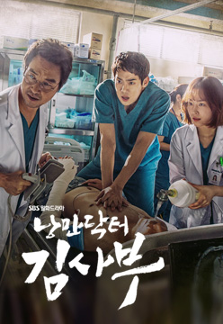
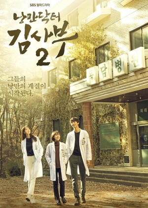
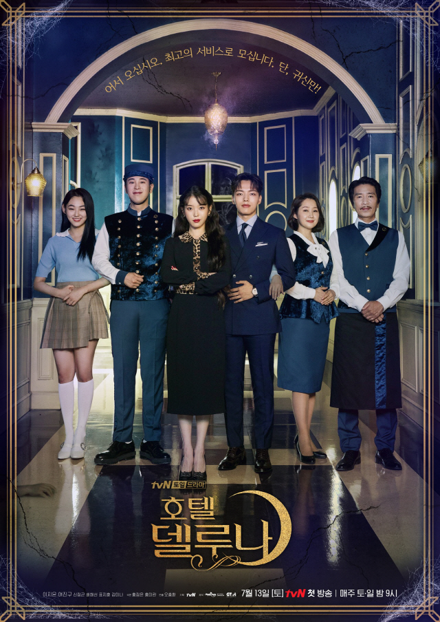
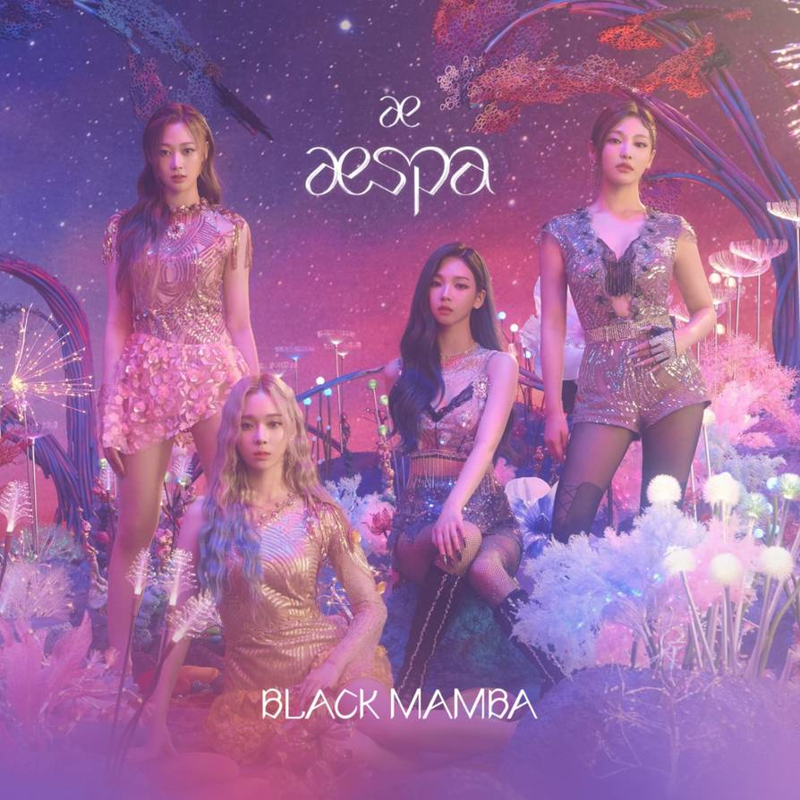
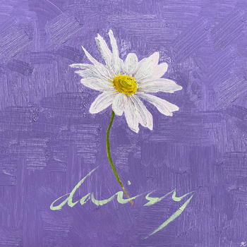

My Interest : Watching K-Drama, Listening and Dancing to K-Music |
|---|
Latest Watched K-Drama |
Latest K-Music |
|
Synopsis: Needing to make $90k to open her own business, Seo Dal-Mi drops out of a university and takes up part-time work. She dreams of becoming someone like Steve Jobs. Nam Do-San is the founder of Samsan Tech. He is excellent with mathematics and an AI developer. He started Samsan Tech two years ago, but the company is not doing well. Somehow, Nam Do-San becomes Seo Dal-Mi’s first love. They cheer each others start and growth. |
About: NCT Resonance Pt. 2, also known simply as Resonance Pt. 2, is the second part of NCT's second full-length album. It was released on November 23, 2020 as part of their large-scale project "NCT 2020". "90's Love" and "Work It" serve as the album's double title tracks. The physical album comes in two versions: Departure and Arrival. |
|
Synopsis: Nam Shin play by (Seo Kang-Joon) is a son from a family who runs a large company. After an unexpected accident, he falls into a coma. His mother Oh Ro-Ra play by (Kim Sung-Ryoung) is an authority on brain science and artificial intelligence. She creates an android named Nam Shin III which looks like just like her son Nam Shin. The android pretends to be Nam Shin and he has a bodyguard So-Bong play by (Gong Seung-Yeon). |
About: Love Me Right is a repackage of EXO's second album Exodus. It was released on June 3, 2015 with "Love Me Right" serving as the album's lead track. The album contains four new tracks. |
|

Synopsis: Boo Yong-Joo was a famous surgeon with the nickname of "Hand of God." He suddenly disappeared and nobody knew exactly why. Boo Young-Joo is now as Teacher Kim and he calls himself the Romantic Doctor. He enjoys his life in seclusion. While Kang Dong-Joo became a doctor to win somebody over and Yoon Seo-Jung become a doctor to be recognized by somebody. After they meet Teacher Kim, they learn about life values and comfort from love. |
About: 回:Walpurgis Night is the third full-length album by GFRIEND. It was released on November 9, 2020 with the song "Mago" serving as the album's title track. |
|

Synopsis: Boo Yong-Joo play by (Han Suk-Kyu) calls himself Dr. Romantic and is called Teacher Kim. He is a weird doctor who does not want to socialize with others. Boo Yong-Joo runs the shabby clinic Doldam Hospital. Cha Eun-Jae plau by (Lee Sung-Kyung) is a 2nd year fellow for surgery. She is smart and confident. She has never experienced discouragement or failure. Seo Woo-Jin play by (Ahn Hyo-Seop) is a 2nd year fellow for surgery. He has excellent skills for surgery. His personality is cynical. Because he went through a tough life, he does not believe in happiness. Cha Eun-Jae and Seo Woo-Jin meet the unusual doctor Teacher Kim. They grow as humans and doctors with their experience with Teacher Kim. |
About: Love Yourself: Tear (Love Yourself 轉 'Tear') is the third Korean full-length album by BTS. It was released on May 18, 2018 with "Fake Love" serving as the album’s title track. |
|

Synopsis: Jang Man-Wol play by (IU) is the CEO of Hotel del Luna. The hotel is situated in downtown in Seoul and has a very old appearance. She made a big error many years ago and, because of this, she has been stuck at Hotel del Luna. She is beautiful, but she is fickle, suspicious and greedy. Koo Chan-Sung play by (Yeo Jin-Goo) worked as the youngest assistant manager ever at a multinational hotel corporation. He is a sincere perfectionist. He looks level-headed, but he actually has a soft disposition. Due to an unexpected case, he begins to work as a manager at Hotel del Luna. The hotel's clientele consists of ghosts. |
About: Take (stylized in all caps) is the second full-length album by Mino. It was released on October 30, 2020 with "Run Away" serving as the album's title track.
The physical album comes in three versions: 1, 2 and limited kit. |
|
Synopsis: In ancient times, Kim Shin play by (Gong Yoo) is an unbeatable general in wars, but the young King play by (Kim Min-Jae)is jealous of Kim Shin and kills him. Kim Shin becomes Dokkaebi(Goblin), possessing an immortal life. At first he thinks that he is blessed, but he realizes that he is cursed. Kim Shin has waited 900 years for a human bride to end his immortal life. 9 years later, he finds a high school student, Ji Eun-Tak lives with her mother and is able to see ghosts. One night, her mother suddenly dies. On that night, she meets the Grim Reaper. She still sees ghosts and hears their whisper of “Dokkaebi’s bride.” She now lives with her aunt’s family, but she is mistreated by them. On her birthday, Ji Eun-Tak sits by the sea with a lighted birthday cake. At that time, Kim Shin suddenly appears in front of her. Kim Shin does not know why, but he can hear her voice and appears in front of her against his will. Coincidentally, Kim Shin lives with the Grim Reaper at the same house. |
About: [12:00] (Midnight) is the third mini album by LOONA. It was released on October 19, 2020 with the song "Why Not?" serving as the album's title track.
A music video for "Star" was released on November 18, 2020 at 12PM KST |
|
Synopsis: Shi-Jin (Song Joong-Ki) is the captain of the special forces. He catches a motorcycle thief with Sergeant Major Dae-Young (Jin Goo). The thief is injured during his capture and is sent to the hospital. In the emergency room, Shi-Jin meets Dr. Mo-Yeon (Song Hye-Kyo) for the first time. He falls in love with her immediately. Shi-Jin and Mo-Yeon begin to date, but due to their jobs their dates don't go well. Shi-Jin takes an order to lead his soldiers on a peacekeeping mission to the country of Uruk. When Shi-Jin and Mo-Yeon meet again, they talk about their views on life and realise how different they are. Shi-Jin, as a soldier, kills to protect lives and Mo-Yeon, as a doctor, tries to save all lives. They say their goodbyes. Eight months later, Mo-Yeon rebuffs the sexual advances of hospital chairman Suk-Won (Tae In-Ho) and as retribution is assigned to lead a medical team in Uruk. There, Shi-Jin and Mo-Yeon meet again. |

About: aespa (에스파; also stylized as æspa) is a four-member girl group under SM Entertainment. They debuted on November 17, 2020 with the digital single "Black Mamba".
Their name is a combination of "æ", which means 'Avatar X Experience', and "aspect", which means double-sided. Together it means that you would being able to experience a new world through another avatar of yourself. |
|
Synopsis: Yoon Jong Woo is a young guy in his 20s who moves from the countryside to Seoul after his college friend, Jae Ho, offers him a job. While looking for a place to live, he stumbles upon Eden Gosiwon, a cheap hostel that shares the kitchen and bathroom with other residents. He is not thrilled about the quality of the place or the other abnormal residents, such as his next-door neighbor Seo Moon Jo, a charismatic dentist. Nevertheless, Jong Woo decides to put up with it for 6 months until he saves enough money to move out. However, mysterious events start occurring in the apartment, causing Jong Woo to begin fearing the apartment's residents. |
About: Hello Chapter 3. Hello, Strange Time is the third EP by CIX. It was released on October 27, 2020 with "Jungle" serving as the album's title track. |
|
Synopsis: Will a killer-turned-veterinarian and a detective find common ground?
Kim Soo Hyun is a veterinarian who is also a professional killer. Many individuals and organizations hire him for large sums of money. Nobody in the public knows anything about him as a killer, including his age, name, and race. Animals are his only companions, but deep inside, he constantly yearns for love. He struggles to develop and maintain any pure relationships around him. One day, a client asks him to kill in exchange for information regarding his mysterious past and a conspiracy involving his birth. Do Hyun Jin was once a ballerina, but now she is a detective working in Seoul, who graduated from police academy as the most excelled. Although she looks cold and stern on the outside, she is, in fact, a very sympathetic individual. Hyun Jin trusts her instincts and isn't afraid to rely on the things around her to make a decision to the best of her abilities. She has suffered trauma but still keeps pushing forward. She starts to chase after Kim Soo Hyun as she believes he is a serial killer. What happens when both get to know that the connection between them has started years ago? |

About: We:th is the tenth mini album by PENTAGON. It was be released on October 12, 2020 with "Daisy" serving as the title track. This album marks Yan An's comeback from hiatus[1] while it is also the first release without Jinho who enlisted earlier in the year.
The physical album comes in two versions: SEEN and UNSEEN. |